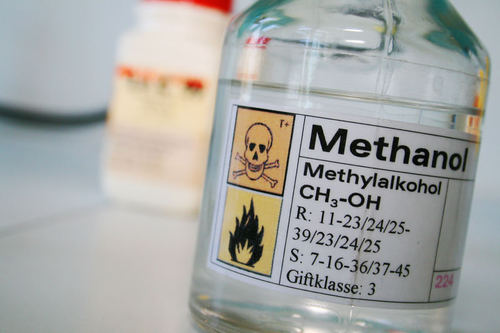
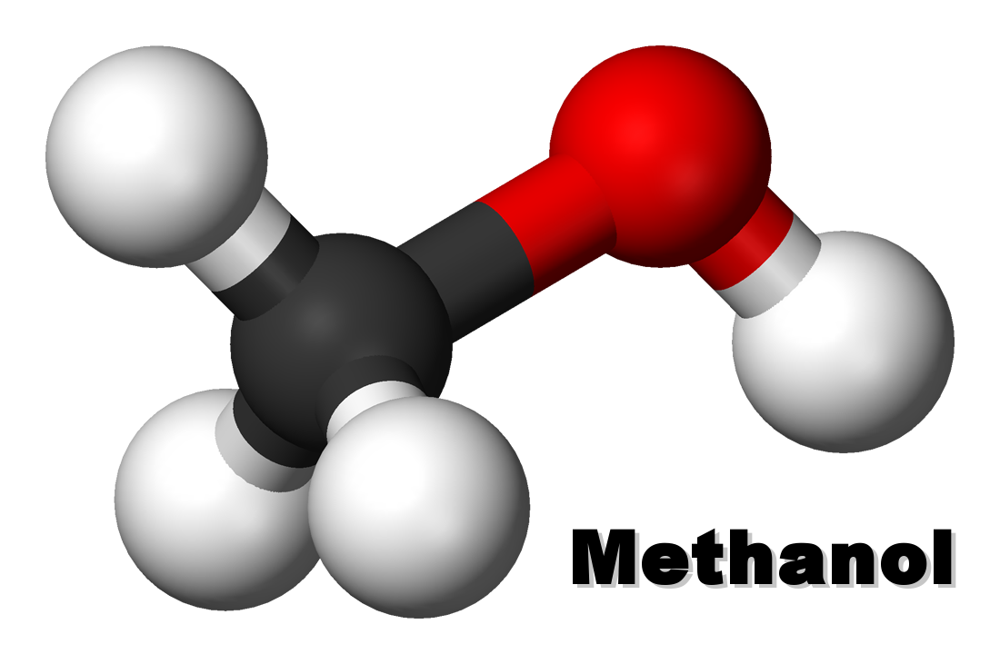

 
Methanol, also known as methyl alcohol among others, is a chemical with the formula CH3OH (often abbreviated MeOH). Methanol acquired the name wood alcohol because it was once produced chiefly as a byproduct of the destructive distillation of wood. Today, industrial methanol is produced in a catalytic process directly from carbon monoxide, carbon dioxide, and hydrogen. Methanol is the simplest alcohol, being only a methyl group linked to a hydroxyl group. It is a light, volatile, colorless, flammable liquid with a distinctive odor very similar to that of ethanol (drinking alcohol).[11] However, unlike ethanol, methanol is highly toxic and unfit for consumption. At room temperature, it is a polar liquid. It is used as an antifreeze, solvent, fuel, and as a denaturant for ethanol. It is also used for producing biodiesel by transesterification reaction. Methanol is produced naturally in the anaerobic metabolism of many varieties of bacteria and is commonly present in small amounts in the environment. As a result, the atmosphere contains a small amount of methanol vapor. However, in only a few days, atmospheric methanol is oxidized by sunlight to produce carbon dioxide and water. Methanol is also found in abundant quantities in star-forming regions of space and is used in astronomy as a marker for such regions. It is detected through its spectral emission lines.[12] Methanol when drunk is metabolized first to formaldehyde and then to formic acid or formate salts.[13] These are poisonous to the central nervous system and may result in blindness, coma, and death. Because of these toxic properties, methanol is frequently used as a denaturant additive for ethanol manufactured for industrial uses. This addition of methanol exempts industrial ethanol (commonly known as "denatured alcohol" or "methylated spirit") from liquor excise taxation in the US and some other countries.(Source:https://en.wikipedia.org/wiki/Methanol)
Methanol is a liquid chemical with the formula CH3OH (often abbreviated MeOH). It is colorless, volatile, flammable, and poisonous. Methanol is made from the destructive distillation of wood and is chiefly synthesized from carbon monoxide and hydrogen. Its principal uses are in organic synthesis, as a fuel, solvent, and antifreeze. Methanol is a polar liquid at room temperature. It is used as antifreeze, solvent, fuel, and as a denaturant for ethanol. The chemical is also used to produce biodiesel via transesterification reaction. Because methanol has toxic properties, it is frequently used as a denaturant additive for ethanol manufactured for industrial purposes. Methanol is frequently called wood alcohol because it was once produced primarily as a byproduct of the destructive distillation of wood. Today, three methods are commonly used to produce synthesis gas from the methane component in natural gas. The methods are steam-methane or SMR, which is endothermic, partial oxidation with molecular oxygen, which is exothermic, and the combination of the two, which is referred to as autothermal reforming.(Source: https://thechemco.com/chemical/methanol/)
Methanol is a clear liquid chemical that is water soluble and readily biodegradable. Methanol is comprised of four parts hydrogen, one-part oxygen and one-part carbon, and is the simplest member of a group of organic chemicals called alcohols. Today, methanol is most commonly produced on an industrial scale using natural gas as the principal feedstock. Methanol is used to produce other chemical derivatives, which in turn are used to produce thousands of products that touch our daily lives, such as building materials, foams, resins, plastics, paints, polyester and a variety of health and pharmaceutical products. Methanol also is a clean-burning, biodegradable fuel. Increasingly, methanol’s environmental and economic advantages are making it an attractive alternative fuel for powering vehicles and ships, cooking food and heating homes.(Source: http://www.methanol.org/about-methanol/)